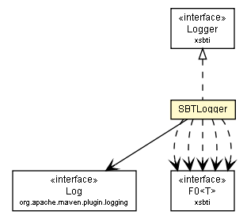

com.google.code.sbt
Class SBTLogger

java.lang.Object
 com.google.code.sbt.SBTLogger
com.google.code.sbt.SBTLogger
- All Implemented Interfaces:
- xsbti.Logger
public class SBTLogger
- extends Object
- implements xsbti.Logger
Maven Logger wrapper implementing SBT Logger interface.
| Methods inherited from class java.lang.Object |
clone, equals, finalize, getClass, hashCode, notify, notifyAll, toString, wait, wait, wait |
SBTLogger
public SBTLogger(Log l)
error
public void error(xsbti.F0<String> msg)
- Specified by:
error in interface xsbti.Logger
warn
public void warn(xsbti.F0<String> msg)
- Specified by:
warn in interface xsbti.Logger
info
public void info(xsbti.F0<String> msg)
- Specified by:
info in interface xsbti.Logger
debug
public void debug(xsbti.F0<String> msg)
- Specified by:
debug in interface xsbti.Logger
trace
public void trace(xsbti.F0<Throwable> exception)
- Specified by:
trace in interface xsbti.Logger
Copyright © 2013. All rights reserved.